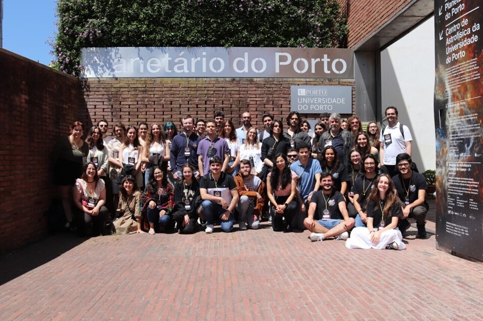
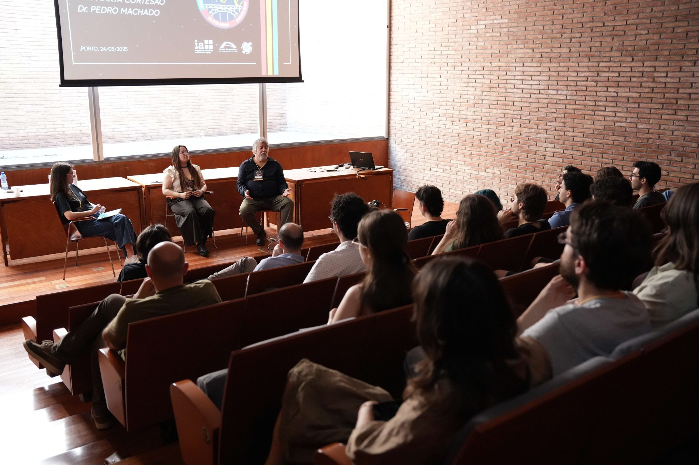
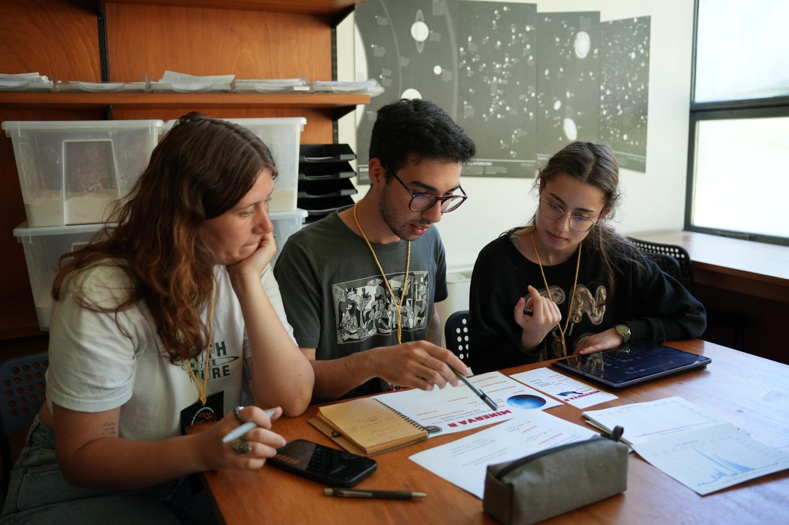
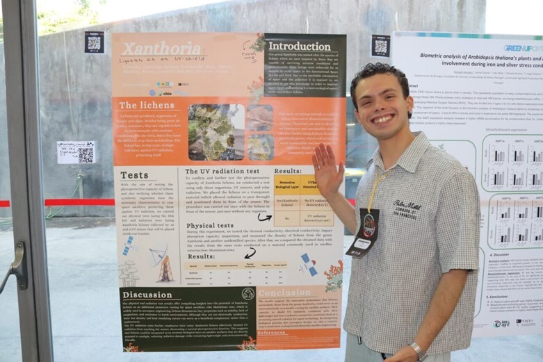

2M">Foto de grupo dos participantes do evento "Astrobiologia: Entre Estrelas e Microrganismos".
Evento organizado pela ABL"Astrobiologia: Entre Estrelas e Microrganismos" (AE2M) foi o primeiro evento científico de astrobiologia organizado na Universidade do Porto. Foi um evento pensado e organizado inteiramente pela equipa da AstroBioLusitanos, com o apoio do Centro de Astrofísica da Universidade do Porto (CAUP) e do Instituto de Astrofísica e Ciências do Espaço (IAstro). Ao longo de um fim de semana, juntámos participantes desde o ensino secundário ao doutoramento para um programa que cruzou biologia, física e química em torno das grandes questões da astrobiologia.
Cinco painéis temáticos, com investigadoras e investigadores portugueses de diferentes áreas da astrobiologia.
A Dra. Catarina Magalhães (Ecologia e Biogeoquímica dos Microbiomas) apresentou como microrganismos interagem com ambientes extremos como fundos oceânicos e os desertos gelados da Antártida.
A Dra. Marta Simões (Universidade de Ciências e Tecnologias de Macau) introduziu a astromicologia, discutindo a resistência de fungos a condições espaciais extremas e o seu potencial na exploração do espaço.
O Dr. Pedro Machado (Centro de Astronomia e Astrofísica da UL) partilhou perspetivas sobre a evolução e habitabilidade de corpos celestes do Sistema Solar.
A Dra. Ângela Santos (CAUP) explicou como o magnetismo e a rotação das estrelas podem influenciar a habitabilidade de exoplanetas.
A Dra. Marta Cortesão (CAUP) apresentou exemplos de missões espaciais envolvendo microrganismos e o seu contributo para sistemas sustentáveis.
A Dra. Lígia Coelho (Universidade de Cornell) explicou como processos observados na Terra podem ajudar a detetar vida em luas geladas e exoplanetas, através de bioassinaturas.
O Dr. Rafael Fernandes (médico, residente de Neurocirurgia na ULS São José) detalhou os efeitos da microgravidade e da radiação espacial na saúde dos astronautas, com foco no sistema nervoso.
O investigador Tiago Ramalho (Universidade de Bremen) abordou o papel de cianobactérias na criação de sistemas sustentáveis para futuras missões a Marte.
Fábio da Silva (criador da página Universo Perpendicular) falou sobre a importância de uma comunicação científica rigorosa em astrobiologia, centrada nos factos e promotora do pensamento crítico.

Mesa redonda, moderada por Marina Grilo, com a participação da Dra. Marta Cortesão e do Dr. Pedro Machado.
Os participantes puseram em prática o que aprenderam nas palestras, em workshops conduzidos pela equipa da ABL: os mesmos que continuamos a levar a escolas e universidades por todo o país.
Estudo de microrganismos extremófilos e das suas estratégias de sobrevivência, e o que nos podem ensinar sobre habitabilidade noutros planetas.
Ver workshop →Introdução às técnicas atuais de deteção de exoplanetas, com uma atividade de simulação da deteção de um exoplaneta.
Ver workshop →Desenvolvimento de sistemas de suporte de vida para Marte: os participantes construíram um ecossistema artificial capaz de produzir comida, oxigénio e água para uma missão tripulada.
Ver workshop →Num formato ao estilo Shark Tank, os participantes apresentaram soluções inovadoras para desafios de medicina e engenharia no espaço.
Ver workshop →
Workshop "Astrofísica: À Procura de Krypton", em que os participantes aprenderam técnicas de deteção de exoplanetas.
Entre painéis e workshops, os participantes apresentaram os seus próprios trabalhos de investigação em astrobiologia durante os coffee breaks: com direito a votação do público para o melhor póster.

"Xanthoria: liquens as an UV-shield": um estudo sobre o uso de líquenes na proteção contra radiação nociva, com aplicações relevantes para a exploração espacial. O trabalho foi escolhido por voto dos participantes como o melhor póster do evento.
Depois de um fim de semana entre estrelas e microrganismos, ficou claro que a astrobiologia está a crescer em Portugal. A forte adesão de estudantes e investigadores mostrou o potencial do país para contribuir ativamente para os desafios atuais desta área.